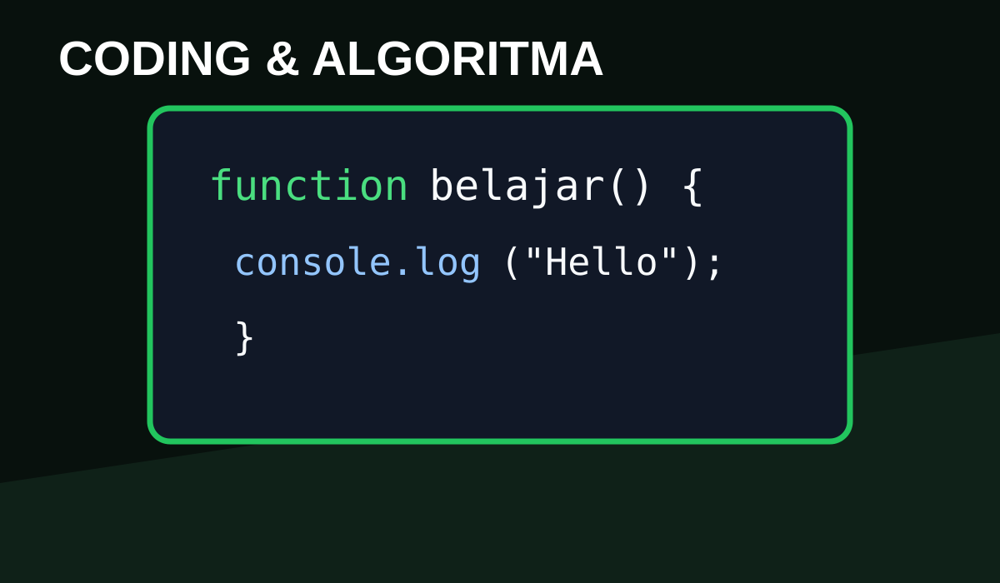
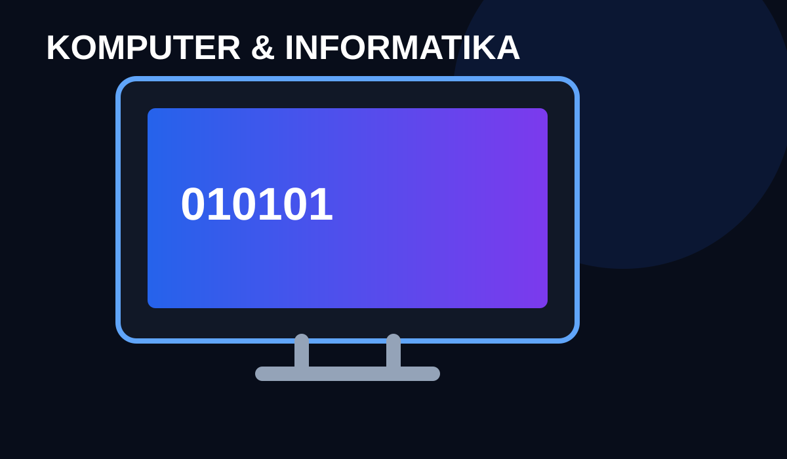
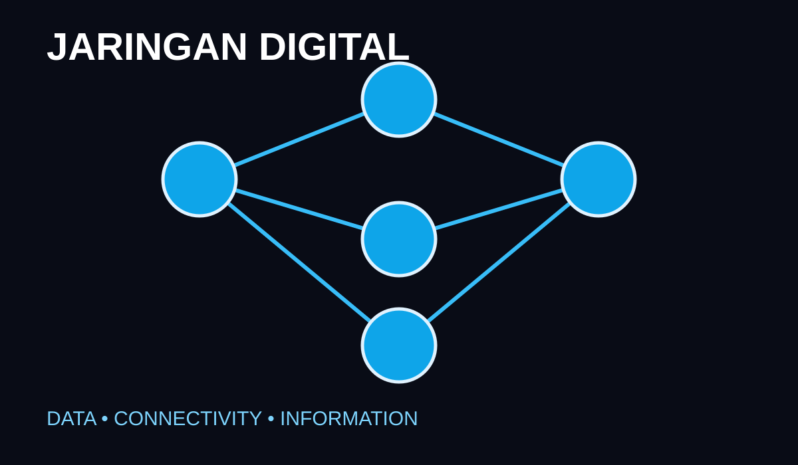

Algoritma & Pemrograman
Algoritma adalah langkah-langkah terstruktur untuk menyelesaikan masalah. Pemrograman digunakan untuk menerjemahkan solusi tersebut menjadi program yang dapat dijalankan komputer.
TUGAS INFORMATIKA • KELOMPOK WILDAN MENGGIGIL
Memahami teknologi, data, algoritma, pemrograman, dan jaringan yang membentuk kehidupan digital kita.
Mulai Menjelajah ↓
Informatika adalah bidang yang mempelajari bagaimana data dan informasi diolah menggunakan sistem komputasi. Informatika tidak hanya tentang komputer, tetapi juga mencakup cara berpikir logis, pemecahan masalah, algoritma, pemrograman, data, jaringan, dan teknologi digital.
Di kehidupan sehari-hari, konsep informatika hadir dalam aplikasi yang kita gunakan, mesin pencari, media sosial, permainan, sistem sekolah, hingga berbagai layanan digital.

Algoritma adalah langkah-langkah terstruktur untuk menyelesaikan masalah. Pemrograman digunakan untuk menerjemahkan solusi tersebut menjadi program yang dapat dijalankan komputer.

Jaringan menghubungkan perangkat agar dapat berkomunikasi dan bertukar data. Internet merupakan contoh jaringan global yang menghubungkan banyak sistem di seluruh dunia.
Data dapat diolah menjadi informasi yang berguna. Kemampuan mengelola data membantu manusia membuat keputusan dan membangun berbagai layanan digital.
Pesan instan, email, dan video call memudahkan komunikasi tanpa batas jarak.
Teknologi membantu mencari informasi, belajar secara interaktif, dan mengerjakan tugas.
Komputer dan software membuka ruang untuk membuat desain, video, game, dan karya digital.
Anggota kelompok: